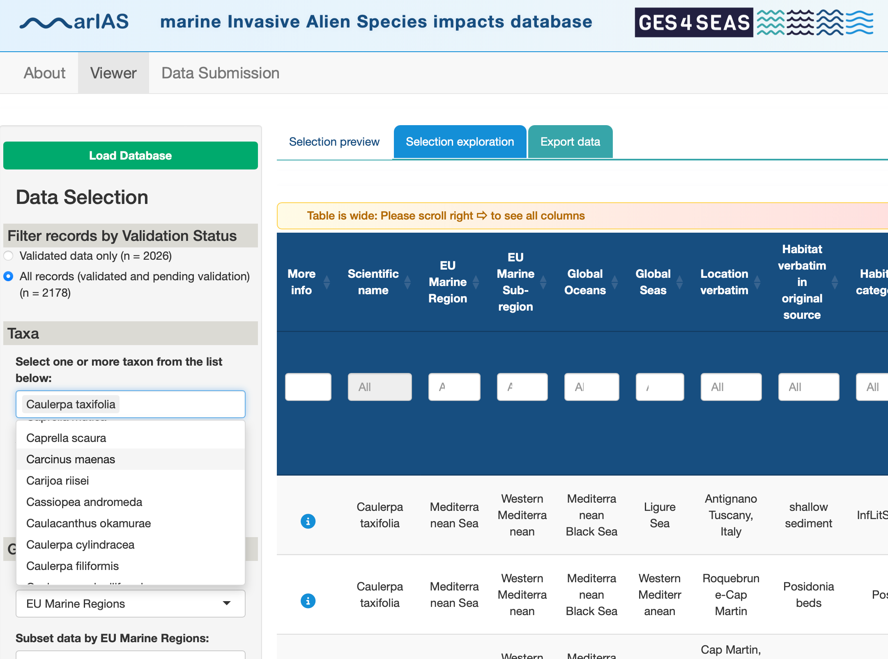
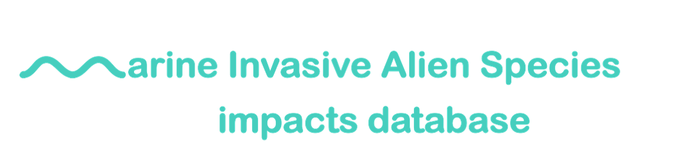

A tool for standardizing knowledge on the environmental impacts of marine invasive alien species.
Compiling and revising weights for species impacts is highly time consuming. marIAS impacts database offers a way to gather such information while building stronger evidence from the increasing knowledge base.

The marIAS impacts database originated from the need for methods that would express uncertainty in transparent ways, for designing valid, reproductible protocols to quantify the risk levels. This lack of confidence and accountability has long been a concern around methods to quantify the magnitude of impacts caused by IAS, with great attention being devoted to the need for standardizing impact assessments. Impact scoring systems are an important tool in the operationalization of such assessments, and several have been developed by the scientific community.
For each alien species this database gathers evidence from the literature to determine a species Magnitude of Impact in a given habitat and its associated communities, following a standard protocol. It also characterises the Strength of evidence depending on the source of the information to incorporate uncertainty in the impact weights. In additon, it gathers information on the habitat affected and the location of the impact evidence to allow exploring variability of impact per region and per habitat. Further details will be provided in our upcoming publicaton.
marIAS impacts database has been implemented as a ShinyApp. Explore the released Beta version and send us your feedback!
